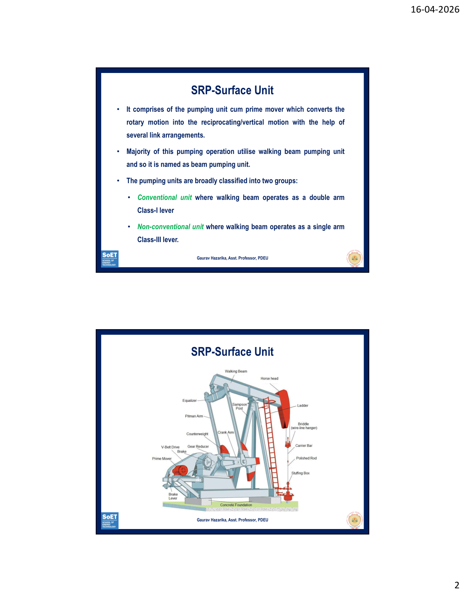
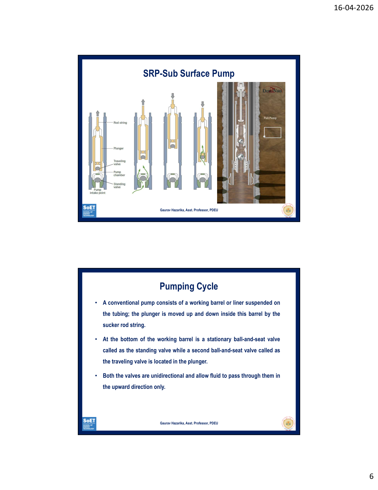
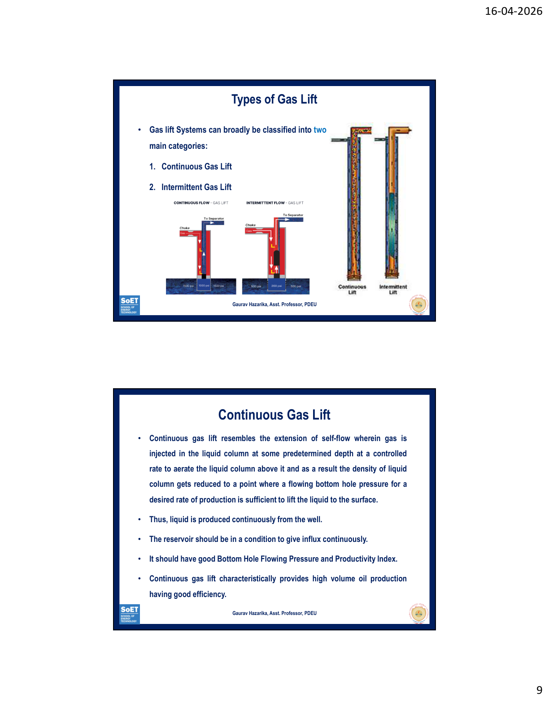
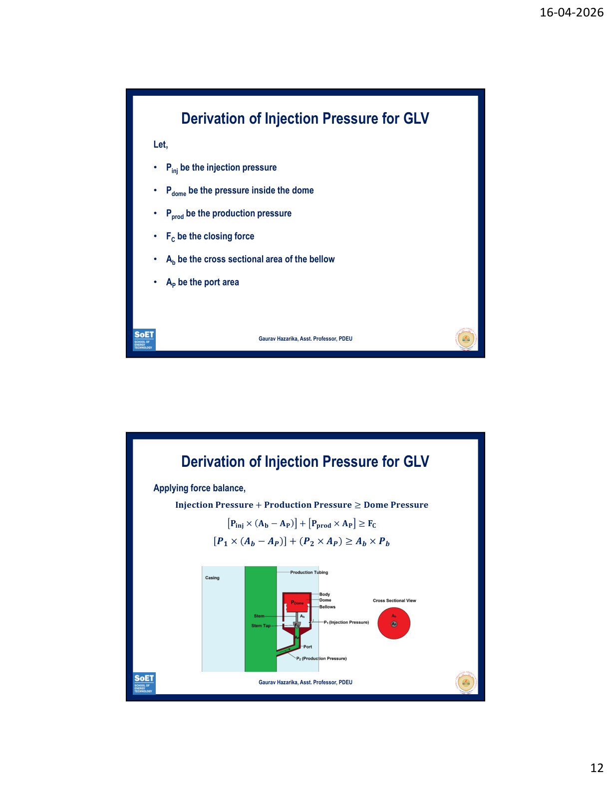
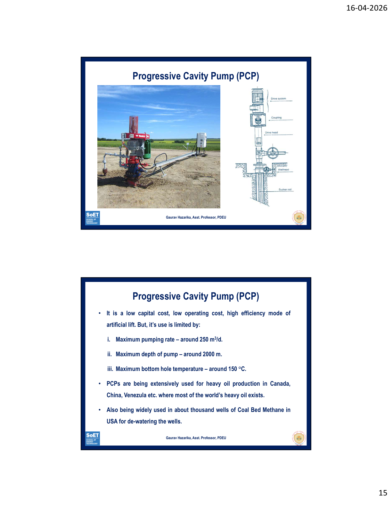
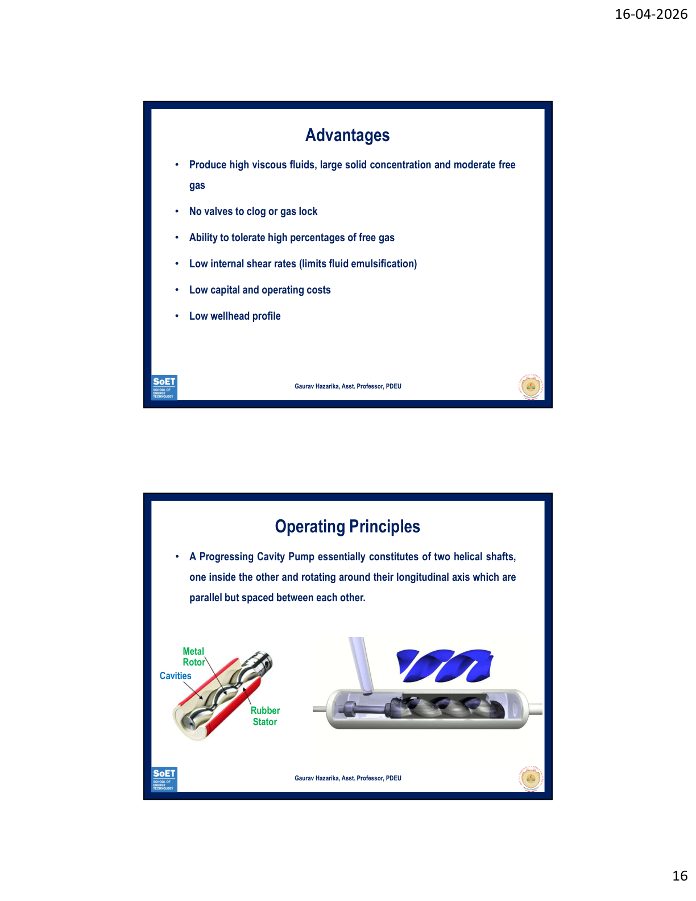
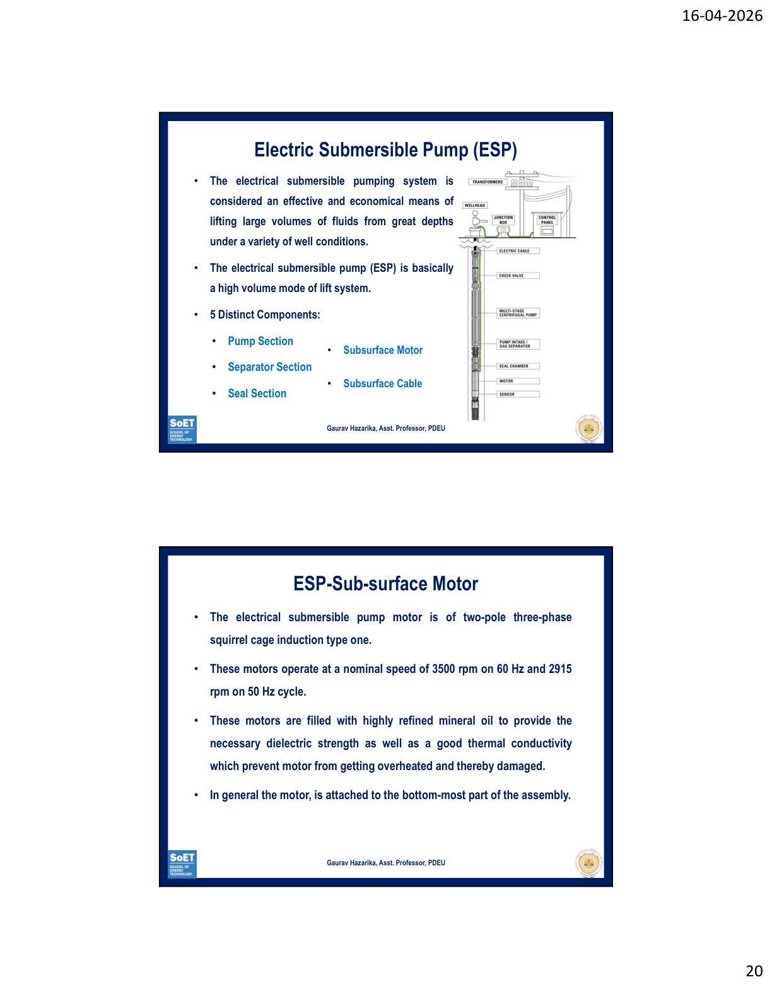
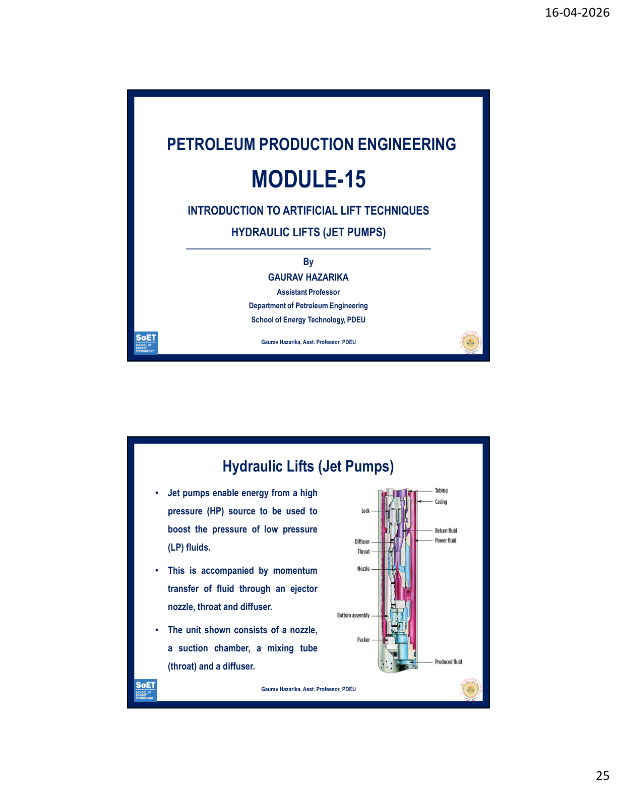

Introduction to Artificial Lift Techniques
SRP (also called Beam Pumping Unit or Nodding Donkey) is the oldest and most widely used artificial lift. It converts rotary motion → reciprocating motion to lift oil.
Two types of surface units: Conventional (walking beam = Class-I lever) and Non-conventional (walking beam = Class-III lever).

Mention: "The counterweight is critical for energy balance — during upstroke it rotates downward reducing motor load, and stores energy during downstroke." Then draw a neat labelled diagram.

Draw a 2-panel diagram: left panel = downstroke (TV open, SV closed), right panel = upstroke (TV closed, SV open). Label fluid direction arrows. This alone can get you 7/10.
High-pressure gas is injected into the fluid column in the tubing to reduce the density of the fluid from the point of injection to the surface. This allows a lower reservoir pressure to lift fluids to surface.

Mention: "The premature application of gas lift used the U-tube principle for shallow wells. With advent of Gas Lift Valves (GLVs), application extended to deeper wells." This shows depth of knowledge.
A GLV has 5 basic components: Body, Loading Element, Responsive Element, Transmission Element, Metering Element. The most common is the bellow-operated nitrogen-pressure loaded GLV.

Let: Pinj = injection pressure, Pdome = dome pressure, Pprod = production pressure, Ab = bellows area, AP = port area
Force Balance for valve to open:
Pinj×(Ab−AP) + Pprod×AP ≥ Ab×Pdome
Rearranging:
Pinj ≥ (Pdome − Pprod×M) / (1 − M)
Where M = AP/Ab (port-to-bellows area ratio)
State: "In practice, M is small (AP ≪ Ab), so the valve is primarily controlled by injection pressure. The dome pressure acts as the closing force via the bellows."
PCP is the youngest artificial lift method (used since early 1980s). Used mainly for: Heavy oil CBM dewatering Sand cuts up to 85% Mature water floods


Mention: "PCP is extensively used in Canada, China, and Venezuela for heavy oil, and in ~1000 CBM wells in USA for dewatering. It is particularly popular in environmentally sensitive areas due to its low wellhead profile."
ESP is a high-volume artificial lift for lifting large volumes of fluid from great depths. It is economical and effective under a variety of well conditions.

Motor Shroud – used when fluid flow past motor is insufficient for cooling; diverts all fluid past motor.
Mention the BHP formula: BHP = (Q × Head × SG) / Pump Efficiency. This shows you know the design considerations. Also note: "ESP is preferred for offshore wells and high water-cut wells where large volumes must be handled efficiently."
Jet pumps transfer energy from a high-pressure (HP) power fluid to boost pressure of low-pressure (LP) well fluid via momentum transfer through an ejector nozzle, throat, and diffuser. No moving parts downhole.

Key differentiator: "Unlike all other artificial lift methods, the jet pump has NO moving parts downhole — the energy transfer is entirely through fluid momentum. This makes it extremely reliable and maintenance-free at depth."